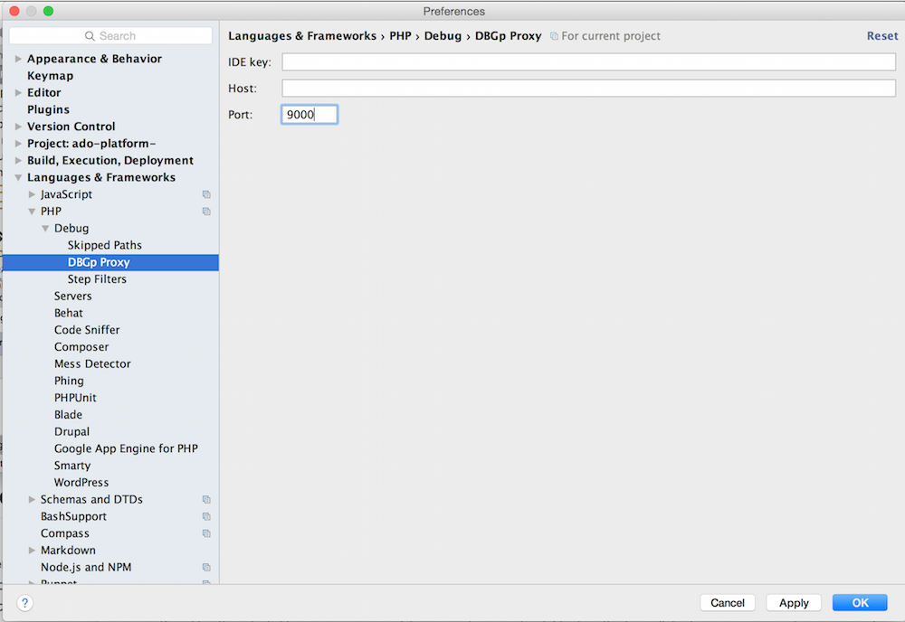
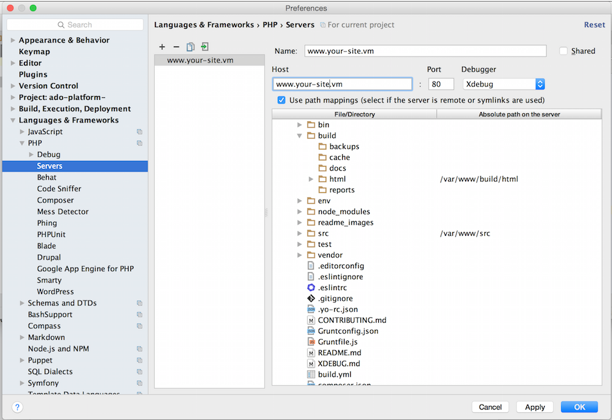

Local Xdebug with DevTools & PHPStorm
Getting Xdebug set up can be a bit challenging but while there are many discrete steps, they are individually straightforward. This guide will walk you through getting setup quickly with PHPStorm.
Applies to use of the Phase2 Docker Images
This documentation specifically pertains to using Phase2's Apache-PHP Docker Images or the Phase2 Drupal Build Image.
devtools-cli itself is only relevant in that it brokers standardized DNS practices.
Make sure your environment is up-to-date
In case there might be fixes for any problems you might encounter, consider updating devtools before proceeding.
Once done, run devtools doctor to confirm devtools is in a healthy. Check out Troubleshooting
or the F.A.Q. if anything comes up.
If you haven't updated your Docker Images in awhile, doing so now is a good precautionary step that you have everything you need. Check out the Routine Image Maintenance
Setup Steps
1. Activate Xdebug for your running Drupal site
In your docker command or your docker-compose.yml manifest, ensure the environment variable PHP_XDEBUG="true". This
will load the PHP Xdebug extension with the default configuration.
For details of the Xdebug configuration of Phase2's Apache PHP containers, check out the apache-php-base DockerHub page.
2. Configure PHPStorm for Xdebug
To get started configuring your PHPStorm IDE open the application settings.
Click on the wrench icon in the toolbar:
You can also get to the project settings by going to: PHPStorm > Preferences (OSX) or File > Settings (Windows, Linux).
3. Adjust the PHP Project settings.
Make sure you have the correct version of PHP selected:

4. Adjust the Debug Project settings.
- Xdebug is using Port 9000.
- Accept external connections.
Eyes on Your Xdebug Configuration
You can view your Xdebug configuration by looking inside the Apache container.
With the container name (found via docker ps), try running:
docker exec [container_name] /usr/bin/env cat /etc/opt/remi/php70/php.d/15-xdebug.ini
if using docker-compose with your Apache container named *www, you can more simply run:
docker-compose exec www /usr/bin/env cat /etc/opt/remi/php70/php.d/15-xdebug.ini
This path varies by PHP version. For PHP 5.6 check /etc/opt/rh/rh-php56/php.d/15-xdebug.ini.
5. For the DBGp Proxy, just ensure that the port is the same.
You can leave the other settings blank.

6. Adjust the Server Project settings.
Create a new Server by clicking on the "+" button. Give your server a name and input the host.
Be sure to add the docroot mappings. The example shown here is using the Grunt Drupal Tasks
project structure. There are two mappings in this case. One for the docroot (build/html) and the other for the src
directory so that breakpoints can be set in the custom modules in the src directory as well.
These mappings are used to match paths from inside the Docker container to the paths used in the local filesystem where PHPStorm is run.

7. Validate your debug settings.
Proxies Interfere with Xdebug
When setting your server URL, be sure to use the URL associated with your web container. If you are using a proxy (such as Varnish) that URL may validate but will not work in practice.
Select the "Web Server Debug Validation" option from the "Run" menu option. (Confirm your Apache container is running or this validation will fail.)

This will display a dialog window that allows you to validate your settings. Make sure that your "Path to create validation script" points to your project docroot and the URL is your project URL.
If all goes well, clicking the "Validate" button should give you something like this:
Click the dialog 'x' (close) button to close this dialog window.
8. Restart PHPStorm.
In order to ensure that all your settings are applying, you will need to restart PHPStorm.
9. Make sure that you listen for connections!
10. Configure a Debugger
- Select Run -> Edit Configurations from the main PHPStorm menu
- Click + and add a "PHP Web Application"
- Give it a name, then select the Server defined in the previous section from the drop-down menu.
- Enter a Start URL of
/. - Select your Browser (e.g. Chrome)
- Click OK.
Overriding the Default Xdebug Configuration
If your project or workflow has special needs, you can override the Xdebug configuration using Volume Mounts to substitute your own template file. Copy the original template into your project and make the necessary changes. (You can also pull your current version of this file from the locally running docker image.)
Commit your version of the file and add a volume mount to your docker-compose manifest with an entry such as:
./env/local/xdebug.ini.tmpl:/etc/confd/templates/xdebug.ini.tmpl
Once that's in place, you will have to restart the container to pick up the new volume mount:
docker-compose restart www